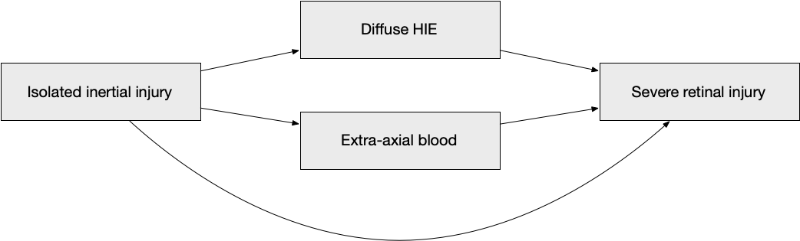
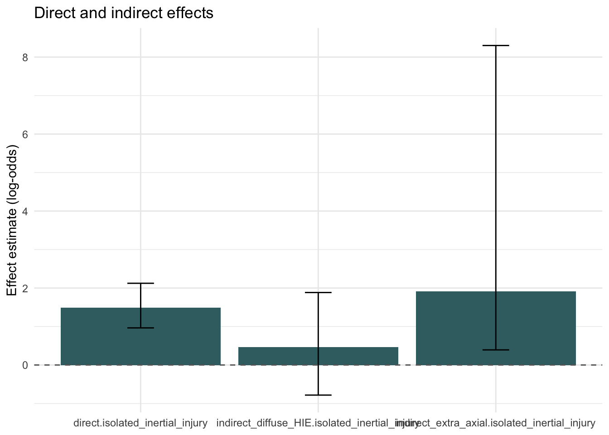
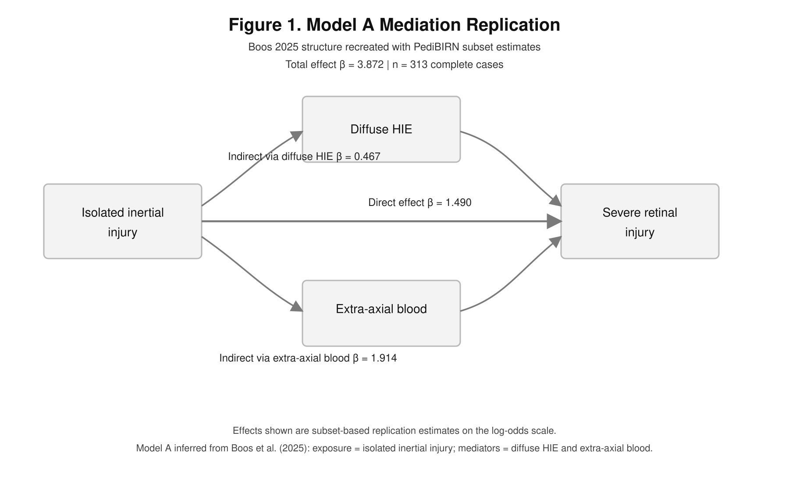

Show code
library(readxl)
library(dplyr)
library(tidyr)
library(knitr)
library(ggplot2)We begin by loading the packages used throughout this replication.
library(readxl)
library(dplyr)
library(tidyr)
library(knitr)
library(ggplot2)This file attempts to replicate the first mediation model from Boos et al. (2025) using the PediBIRN subset available in ../Data/Data.xlsx.
Because the full analytic codebook and the full 973-record paper dataset were not shared, this replication necessarily involves a few explicit assumptions:
severe_retinal_injury = 1 if retinoschisis or severe retinal hemorrhage is present.isolated_inertial_injury as the primary exposure, with diffuse_HIE and extra_axial_blood as mediators, based on the paper abstract and the intern reconstruction document.The goal is therefore not an identical reproduction of the published coefficients, but a transparent subset-based replication of the same basic causal model.
We now load the control and intervention sheets from the PediBIRN subset and combine them into a single patient-level dataset.
data_path <- "../Data/Data.xlsx"
dat_control <- read_excel(data_path, sheet = "Eligible Control Patients") |>
mutate(data_source = "control")
dat_intervention <- read_excel(data_path, sheet = "Eligible Intervention Patients") |>
mutate(data_source = "intervention")
dat_raw <- bind_rows(dat_control, dat_intervention)
nrow(dat_raw)[1] 432This subset contains fewer records than the published paper dataset, so the coefficients should be treated as approximate rather than expected to match exactly.
We now reconstruct the first mediation model variables using the mappings described in Boos2025.pdf and the intern reconstruction document.
col_prefix <- function(prefix) {
match_idx <- which(startsWith(names(dat_raw), prefix))[1]
if (is.na(match_idx)) {
stop(paste("No column found with prefix:", prefix))
}
names(dat_raw)[match_idx]
}
col_contains <- function(text) {
match_idx <- grep(text, names(dat_raw), ignore.case = TRUE)[1]
if (is.na(match_idx)) {
stop(paste("No column found containing:", text))
}
names(dat_raw)[match_idx]
}
feature_map <- c(
age_months = col_prefix("Q2.3.1."),
respiratory_compromise = col_prefix("Q4.2.1."),
circulatory_compromise = col_prefix("Q4.2.2."),
altered_consciousness = col_prefix("Q4.2.4."),
craniofacial_injury = col_prefix("Q4.3.1."),
skull_fracture = col_prefix("Q4.4.1."),
epidural_hemorrhage = col_prefix("Q4.4.3."),
subdural_hemorrhage = col_prefix("Q4.4.4."),
sdh_bilateral = col_prefix("Q4.4.5.2."),
sdh_interhemispheric = col_contains("interhemispheric space"),
subarachnoid_hemorrhage = col_prefix("Q4.4.7."),
hie_any = col_prefix("Q4.4.12."),
hie_depth = col_prefix("Q4.4.13."),
hie_distribution = col_prefix("Q4.4.14."),
ophthalmology_eval = col_prefix("Q5.3.1.10."),
retinoschisis = col_prefix("Q5.3.2.8."),
severe_rh = col_prefix("Q5.3.2.9.")
)
mediation_data <- dat_raw |>
transmute(
age_months = as.numeric(.data[[feature_map["age_months"]]]),
respiratory_compromise = as.integer(.data[[feature_map["respiratory_compromise"]]]),
circulatory_compromise = as.integer(.data[[feature_map["circulatory_compromise"]]]),
altered_consciousness = as.integer(.data[[feature_map["altered_consciousness"]]]),
craniofacial_injury = as.integer(.data[[feature_map["craniofacial_injury"]]]),
skull_fracture = as.integer(.data[[feature_map["skull_fracture"]]]),
epidural_hemorrhage = as.integer(.data[[feature_map["epidural_hemorrhage"]]]),
subdural_hemorrhage = as.integer(.data[[feature_map["subdural_hemorrhage"]]]),
sdh_bilateral = as.integer(.data[[feature_map["sdh_bilateral"]]]),
sdh_interhemispheric = as.integer(.data[[feature_map["sdh_interhemispheric"]]]),
subarachnoid_hemorrhage = as.integer(.data[[feature_map["subarachnoid_hemorrhage"]]]),
hie_any = as.integer(.data[[feature_map["hie_any"]]]),
hie_depth = as.integer(.data[[feature_map["hie_depth"]]]),
hie_distribution = as.integer(.data[[feature_map["hie_distribution"]]]),
ophthalmology_eval = as.integer(.data[[feature_map["ophthalmology_eval"]]]),
retinoschisis = as.integer(.data[[feature_map["retinoschisis"]]]),
severe_rh = as.integer(.data[[feature_map["severe_rh"]]])
) |>
mutate(
severe_retinal_injury = if_else(
ophthalmology_eval == 1L,
if_else(retinoschisis == 1L | severe_rh == 1L, 1L, 0L),
NA_integer_
),
clinical_hypoxia_ischemia = if_else(
respiratory_compromise == 1L | circulatory_compromise == 1L,
1L, 0L,
missing = NA_integer_
),
extra_axial_blood = if_else(
subdural_hemorrhage == 1L | subarachnoid_hemorrhage == 1L,
1L, 0L,
missing = NA_integer_
),
diffuse_HIE = if_else(
hie_any == 1L & (hie_depth == 2L | hie_distribution == 2L),
1L, 0L,
missing = NA_integer_
),
inertial_subdural = if_else(
subdural_hemorrhage == 1L & (sdh_bilateral == 1L | sdh_interhemispheric == 1L),
1L, 0L,
missing = NA_integer_
),
inertial_injury = if_else(
altered_consciousness == 1L | inertial_subdural == 1L,
1L, 0L,
missing = NA_integer_
),
contact_injury = if_else(
craniofacial_injury == 1L | skull_fracture == 1L | epidural_hemorrhage == 1L,
1L, 0L,
missing = NA_integer_
),
isolated_inertial_injury = if_else(
inertial_injury == 1L & contact_injury == 0L,
1L, 0L,
missing = NA_integer_
)
)
analysis_vars <- c(
"severe_retinal_injury",
"isolated_inertial_injury",
"diffuse_HIE",
"extra_axial_blood"
)
oph_subset <- mediation_data |>
filter(ophthalmology_eval == 1L)
summary_tbl <- tibble(
variable = analysis_vars,
n_non_missing = sapply(oph_subset[analysis_vars], function(x) sum(!is.na(x))),
mean = sapply(oph_subset[analysis_vars], function(x) mean(x, na.rm = TRUE))
)
kable(summary_tbl, digits = 3, caption = "Table 1. Reconstructed mediation-model variables in the ophthalmology subset")| variable | n_non_missing | mean |
|---|---|---|
| severe_retinal_injury | 313 | 0.428 |
| isolated_inertial_injury | 313 | 0.342 |
| diffuse_HIE | 313 | 0.355 |
| extra_axial_blood | 313 | 0.907 |
This table checks that the reconstructed variables behave plausibly in the ophthalmology subset before any mediation modeling is attempted.
We now fit the inferred first mediation model, using isolated inertial injury as the exposure, diffuse HIE and extra-axial blood as mediators, and severe retinal injury as the outcome.
Statistically, this is implemented here as three logistic regression models. Let (X_i) denote isolated inertial injury for child (i), let (M_{1i}) denote diffuse HIE, let (M_{2i}) denote extra-axial blood, and let (Y_i) denote severe retinal injury. The fitted models are:
\[ \text{logit}\{\Pr(M_{1i} = 1)\} = \alpha_0 + \alpha_1 X_i + \varepsilon_{1i} \]
\[ \text{logit}\{\Pr(M_{2i} = 1)\} = \gamma_0 + \gamma_1 X_i + \varepsilon_{2i} \]
\[ \text{logit}\{\Pr(Y_i = 1)\} = \beta_0 + \beta_1 X_i + \beta_2 M_{1i} + \beta_3 M_{2i} + \varepsilon_{3i} \]
Under this approximation, the direct effect is represented by (_1), while the two indirect effects are summarized by the coefficient products (_1 _2) and (_1 _3).
We now show the same model as a directed acyclic graph.

model_data <- oph_subset |>
select(all_of(analysis_vars)) |>
na.omit()
mediator_model_diffuse_hie <- glm(
diffuse_HIE ~ isolated_inertial_injury,
data = model_data,
family = binomial()
)
mediator_model_extra_axial <- glm(
extra_axial_blood ~ isolated_inertial_injury,
data = model_data,
family = binomial()
)
outcome_model <- glm(
severe_retinal_injury ~ isolated_inertial_injury + diffuse_HIE + extra_axial_blood,
data = model_data,
family = binomial()
)This approximation uses logistic regression for both mediators and the outcome, then summarizes indirect effects as products of the relevant log-odds coefficients.
We now use a nonparametric bootstrap to summarize the direct and indirect effects in the same general style as the paper.
fit_effects <- function(df) {
m1 <- glm(
diffuse_HIE ~ isolated_inertial_injury,
data = df,
family = binomial()
)
m2 <- glm(
extra_axial_blood ~ isolated_inertial_injury,
data = df,
family = binomial()
)
y <- glm(
severe_retinal_injury ~ isolated_inertial_injury + diffuse_HIE + extra_axial_blood,
data = df,
family = binomial()
)
c(
indirect_diffuse_HIE = coef(m1)["isolated_inertial_injury"] * coef(y)["diffuse_HIE"],
indirect_extra_axial = coef(m2)["isolated_inertial_injury"] * coef(y)["extra_axial_blood"],
direct = coef(y)["isolated_inertial_injury"]
)
}
observed_effects <- fit_effects(model_data)
set.seed(123)
n_boot <- 1000
boot_effects <- replicate(
n_boot,
{
idx <- sample.int(nrow(model_data), replace = TRUE)
tryCatch(
fit_effects(model_data[idx, , drop = FALSE]),
error = function(e) c(
indirect_diffuse_HIE = NA_real_,
indirect_extra_axial = NA_real_,
direct = NA_real_
)
)
}
)
boot_effects <- t(boot_effects)
boot_effects <- boot_effects[complete.cases(boot_effects), , drop = FALSE]
effect_tbl <- tibble(
effect = names(observed_effects),
estimate = as.numeric(observed_effects),
se = apply(boot_effects, 2, sd),
ci_lower = apply(boot_effects, 2, quantile, probs = 0.025),
ci_upper = apply(boot_effects, 2, quantile, probs = 0.975),
p_value = 2 * pmin(
colMeans(boot_effects <= 0),
colMeans(boot_effects >= 0)
)
)
kable(effect_tbl, digits = 3, caption = "Table 2. Bootstrapped direct and indirect effects for the first mediation model")| effect | estimate | se | ci_lower | ci_upper | p_value |
|---|---|---|---|---|---|
| indirect_diffuse_HIE.isolated_inertial_injury | 0.467 | 0.665 | -0.782 | 1.883 | 0.468 |
| indirect_extra_axial.isolated_inertial_injury | 1.914 | 4.465 | 0.392 | 8.301 | 0.004 |
| direct.isolated_inertial_injury | 1.490 | 0.302 | 0.964 | 2.123 | 0.000 |
This table is the main replication target. The estimates are in log-odds units, so they are most comparable to the coefficients reported in the Boos paper.
We now display the fitted outcome-model coefficients so it is clear which variables are driving the direct and mediated paths.
outcome_coef_tbl <- as.data.frame(coef(summary(outcome_model))) |>
tibble::rownames_to_column("term") |>
rename(
estimate = Estimate,
std_error = `Std. Error`,
statistic = `z value`,
p_value = `Pr(>|z|)`
)
kable(outcome_coef_tbl, digits = 3, caption = "Table 3. Outcome-model coefficients")| term | estimate | std_error | statistic | p_value |
|---|---|---|---|---|
| (Intercept) | -3.151 | 0.673 | -4.679 | 0.00 |
| isolated_inertial_injury | 1.490 | 0.298 | 4.999 | 0.00 |
| diffuse_HIE | 2.485 | 0.306 | 8.109 | 0.00 |
| extra_axial_blood | 1.509 | 0.647 | 2.331 | 0.02 |
This table is helpful because it separates the direct effect of isolated inertial injury from the associations of the two mediators with severe retinal injury.
We now plot the direct and indirect effects to make the relative sizes easier to compare.
ggplot(effect_tbl, aes(x = effect, y = estimate)) +
geom_col(fill = "#3C6E71") +
geom_errorbar(aes(ymin = ci_lower, ymax = ci_upper), width = 0.15) +
geom_hline(yintercept = 0, linetype = "dashed", color = "grey40") +
labs(
title = "Direct and indirect effects",
x = NULL,
y = "Effect estimate (log-odds)"
) +
theme_minimal()
This figure helps show whether the first-model replication is being driven mainly by the direct path from isolated inertial injury to severe retinal injury, or by the indirect paths through diffuse HIE and extra-axial blood.
We now recreate the first Boos 2025 mediation figure using the subset-based Model A estimates from this replication.

This replication should be read as an informed approximation, not as a definitive reproduction of the published Boos 2025 mediation model. The main reasons are that the full paper dataset was not available, the exact mediation-figure specification could only be inferred from the paper abstract and snippets, and some variable definitions, especially the HIE depth and distribution mapping, remain partly reconstructed rather than verified from a codebook.
Within those limits, this file provides a transparent first-pass implementation of the model that appears to be summarized in the abstract: isolated inertial injury as the primary exposure, diffuse HIE and extra-axial blood as mediators, and severe retinal injury as the outcome among children with ophthalmology examinations.